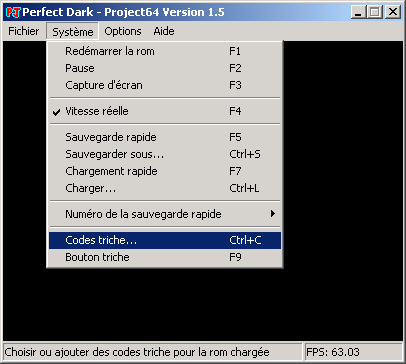

|
| Action
Replay / Gameshark |
| Un
Action Replay ou un Gameshark, ça a la même apparence.
C'est une sorte de Cartouche Noire que l'on met entre le Jeu et
la Console. Il en existe pour pleins de Consoles. On allume la
Console, et là avant de jouer, on peut activer des Codes
modifiant le Jeu. On peut aussi chercher ses propres Codes, c'est
bien pratique. Si vous jouez sur Emulateur, il y a souvent un
Action Replay / Gameshark incorporé à l'interieur,
c'est encore plus simple ! |
 |
 |
| Utiliser
l'Action Replay c'est tricher ! |
Cela dépend du Joueur. Voilà mon point de vue : Je déplore les Soluces qui sortent 2 Jours après le Jeu, tout comme je déplore le Joueur qui utilise l'AR pour ruiner un Jeu sans vergogne. Voici maintenant mon histoire. J'ai acheté Goldeneye peu après sa sortie. J'y ai joué comme jamais je n'avais joué à un Jeu auparavant, un VRAI Bonheur, quadruplé par une convivialité hors-normes. J'ai passé des jours entiers dessus, passionné drogué ? Jusqu'a ce que je connaisse Goldeneye par cœur. Puis je découvris sur Internet des tas de Codes Action Replay. Pour quoi faire puisque j'avais retourné le Jeu dans tous les sens me direz-vous ? Ben parce que Goldeneye mérite d'être découvert comme je l'ai fait avec l'AR. Avec, on accède aux entrailles du Jeu, et sa Durée de Vie en est considérablement allongée. Maintenant, les Codes du genre Energie Illimitée ou Tous les Codes débloqués, je m'en tape. Moi ce qui m'intéresse, ce sont les Niveaux Cachés, les Personnages que l'on créée, et toutes les autres bidouilles qui sont sur ce Site ! |
| Quelle
est la différence entre un Action Replay et un Gameshark ? |
Les Codes sont différents. Un Code Gameshark ne marchera pas sur un Action Replay, et vice-versa. C'est bizarre... Avant je croyais que un Action Replay, c'était un Gameshark Européen. Et puis un jour j'ai enfin eu ma Cartouche Goldeneye US. Pour voir, j'ai branché l'Action Replay entre la Console US et le Jeu US.... et çà a marché. J'ai mis des Codes Gameshark, et çà fonctionne !! Etrange comme histoire non ? |
| Utiliser
l'Action Replay / Gameshark de l'Emulateur Project 64 ! |
|
Allez dans Options, puis Reglages, et décochez la Case « Cacher les Réglages Avancés ». Ainsi, vous pourrez entrer des Codes Action Replay ! Faites Systeme, puis Codes Triches ! |

Là il y a déjà 4 Codes que j'ai mis avant...

Clique-Droit dans le Vide comme sur la Photo, puis Ajoutez un Nouveau Code !

Entrez un Nom, celui que vous voulez, comme Code Exemple sur l'image. Entrez ensuite les 12 Variables qui constituent chaque Code. D'abord 8, espace, puis 4. Sur l'image, j'ai entré n'importe quoi, histoire que vous compreniez ou l'on doit mettre un espace : entre les Chiffres et les Lettres. Si vous n'entrez pas cet espace, vous ne pourrez rien faire, c'est important ! |

Cliquez sur Mettre à Jour, juste en bas, et vous avez ceci !

Vous n'avez plus qu'à cocher votre Code, fermer la Fenetre des Codes Triches, et voilà ! Vous pouvez modifier votre Code à tout moment. Faites clique-droit dessus, puis éditez-le ! Simple, non ? |